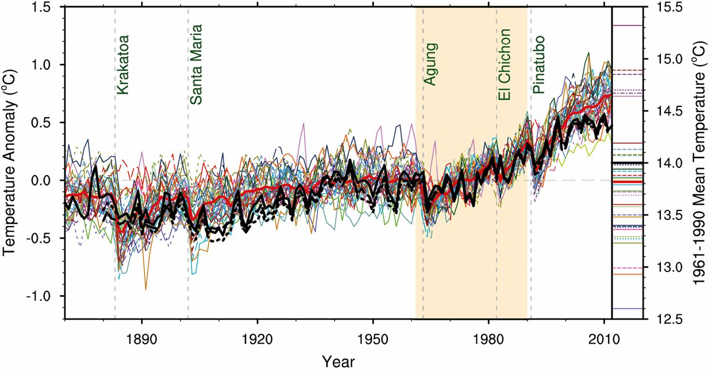

Can we predict global climate tipping points?
ePUB • PDF • 8 m • 1541 w • comments
If the globe warms slightly beyond 2°C, will we cross a climate tipping point that leads to runaway warming or catastrophe? Are we doomed if we don’t stop the warming by 2030 (or 2050)? Predictions of imminent climate tipping points often capture the imagination of the media and the public. Aren’t the harmful consequences of a steadily warming climate and its effect on extreme weather bad enough to spur action? Do we need even more things to worry about?
One reason to worry about new dangers is that we may need to take additional preventive action. But the solution to avoid crossing potential tipping points is exactly the same as the solution to mitigate steady climate change: reduce carbon emissions as quickly as possible to stay close to our current climate equilibrium.
Another reason to talk about potential tipping points is that it can help underscore the urgency for mitigating action. But it would be better to discuss tipping points in general terms, without implying that there are precise global warming thresholds or mitigation time intervals. Numbers associated with tipping points typically come with many caveats about the uncertainties. If the caveats are lost in translation to the public, the numbers can end up feeding into doomist narratives predicated on faux certainty.
Dystopian headlines about doomsday glaciers and methane bombs attract attention and may perhaps spur more climate activism in some people. Casual talk of climate tipping points as if they were imminent can push other people past real emotional tipping points. This can result in debilitating climate anxiety and passive sharing of “doomer memes”, rather than activism.
Climate tipping points are associated with amplifying (or positive) feedbacks that make for a dramatic story. An example is the ice-albedo feedback, which goes like this: unusually warm conditions; more ice melts; less sunlight reflected; more heating and warmth; rinse, repeat. In a geologic instant (i.e., centuries to millennia), we end up with a hot, ice-free planet. Sounds rather scary. But surely we have had some unusually warm summers over the past several thousands of years which could have triggered this feedback. Why aren’t we already ice-free?
That’s because there’s more happening behind the dramatic scenes of an amplifying feedback. There are stabilizing or negative feedbacks that act to counter it. The simplest one goes like this: unusually warm conditions; planet emits more heat; planet cools down; end of story. The stabilizing feedbacks don’t garner much media attention because they are banal, but they collectively overwhelm the amplifying feedbacks and keep the climate stable. If amplifying feedbacks are swashbuckling pirates, stabilizing feedbacks are the boring navy that keeps them in check.
While our climate has been stable for the last ten thousand years, paleoclimatic data tell us that it has undergone abrupt changes before that (by geologic standards).1 The worry then is that future global warming may disrupt the balance between amplifying and stabilizing feedbacks, resulting in an amplifying feedback that “runs away” unfettered, at least for a while until the stabilizing feedbacks catch up. Will this happen at 2°C of global warming, 3°, 5°, or beyond? The complex IPCC models suggest that the answer is “beyond”, but these models aren’t perfect and may not capture the slow amplifying feedbacks well. We can build simplified models to understand the amplifying feedbacks that generate tipping points, but these simpler models may not capture all the stabilizing feedbacks accurately. This precludes attaching specific numeric global thresholds or dates to climate tipping points that may lie in our future.
We know there are absolute local temperature thresholds that are relevant to current and future climates. An important one has to with the human body. A metric called wet-bulb temperature, that combines temperature and humidity, is used as a measure of heat stress on humans. Extended periods with wet-bulb temperatures exceeding about 35°C would be intolerable for humans. (The wet-bulb temperature threshold is lower than the normal human body temperature of 37°C because the body cools itself by sweating and transferring heat to cooler surroundings.)
Human society has adapted to a certain range of temperatures and departing from these temperatures causes harmful impacts. Some regions of the global are closer to the absolute wet-bulb temperature threshold than others, and the anthropogenic warming itself varies regionally. Therefore, the relative warming thresholds for harmful impacts will vary with the region. There are also other region-specific temperature thresholds that affect agricultural and ecological systems. For example, corals are very sensitive to the ambient temperatures. Ice sheets and permafrost also respond to regional temperatures.
Will continued regional warming cause the climate to soon cross a global tipping point? Nonlinearity in the climate system is often touted as a reason to be concerned about tipping points, because a nonlinear system can potentially switch between multiple equilibrium states. But nonlinearity is a double-edged sword: it adds interesting threshold behavior to a system, but it also takes away predictability. As Edward Lorenz showed using a simple model of deterministic chaos, nonlinear error growth can lead to rapid loss of predictive skill. Chaos associated with fast processes like weather reaches saturation for climate prediction, and can be quantified as stochastic noise or “certain uncertainty”.2 But this does not apply to slow climate processes like melting ice sheets and thawing permafrost, which are in the realm of “uncertain uncertainty”. The initial conditions and the governing equations associated with these slow processes are poorly known. This means that nonlinear error growth will make it hard to accurately predict if and when any tipping points associated with these processes will be crossed.
Nonlinearity also prevents us from aggregating different local warming thresholds to come up with a single global warming threshold. Local thresholds associated with amplifying feedbacks can be studied using relatively simple models, but to answer the global question, we must use comprehensive global climate models. These models compute the combined impact of many different regional processes. When we add together many different nonlinearities in a complex system, the different nonlinear transitions can get smeared out, making the global system respond in a “near-linear” fashion with increasing emissions. This can help explain why the IPCC models do not predict that we will cross any tipping point soon, even as they predict that global warming and its impacts will get much worse without mitigation.1
Consider global average surface temperature, which often figures in discussions of tipping points. It is the most commonly used measure to characterize climate change, although it may not be the scientifically most discerning metric. Models can estimate the relative trend in the global temperature with fairly good accuracy to simulate the observed warming (Figure 1, line). But the errors in the absolute global average temperature in model simulations are rather high (Figure 1, sidebar). Among different global climate models, the absolute global average temperature can range between 13°C and 15°C. For one model, 2°C warming means warming globally from 13°C to 15°C, whereas for another model, it means warming from 15°C to 17°C. Since a global 2°C warming translates into different local warming for different models and different regions, it is not possible to identify a hard global warming threshold for catastrophic impacts using current models. All we can say is that if the globe continues to warm, the risk of catastrophic local damage will increase rapidly.
 Figure 1. Estimates of global-average surface temperature anomaly from model integrations performed in support of the fifth phase of the coupled model intercomparison project (CMIP5). Here, the observed anomaly (black) is estimated relative to the observed absolute time-average, while the model anomalies are estimated relative to each model’s absolute time-average. Colored lines represent different models, with thick red denoting the model average, and the vertical dashed line denote volcanic eruptions. The small bar to the right of the figure shows the range of absolute global and time averaged model temperatures for the period 1961 to 1990. From Palmer and Stevens (2019)
Global climate models do not predict a climate cliff’s edge located at specific numbers like 1.5 or 2°C of warming, or by specific dates. But the higher levels of global warming predicted for unmitigated emissions can lead to unbearably harsh weather and climate in many regions, even without crossing any tipping points. Climate harm is more likely to occur by a thousand cuts rather than in one fell swoop. Any planetary warming threshold for tipping points that we can identify will be fuzzy. Does that mean we should worry less about exceeding 2°C global warming, because the local thresholds may be further away than we think? Not quite. A fuzzier global threshold also means that local thresholds for harmful impacts may be closer than we think. So, we need to act as quickly as we can to eliminate carbon emissions.
(Top image adapted from the poster for Pirates of the Caribbean: At World’s End, using the Pieces of Eight font for the overlay text.)
Related articles
-
Why are the (climate) numbers so round? (Metamodel blog)
-
Debate about communicating tipping points (And Then There’s Physics)
-
Runaway tipping points of no return (RealClimate.org)
-
Superrotation, idealized models, and GCMs (Isaac Held)